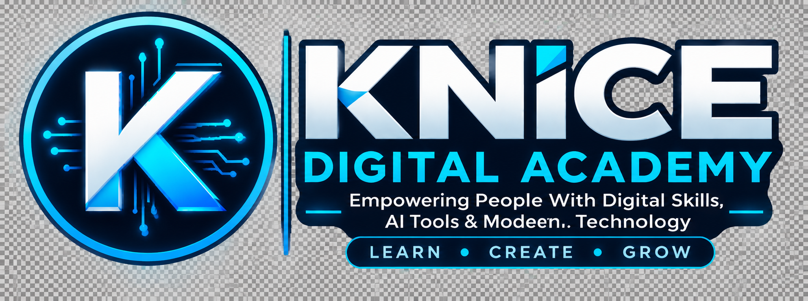

Learn Digital Skills, AI Tools & Modern Technology Koyi Fasahar Zamani, Kayan Aikin AI da Sabuwar Fasaha
Empowering people with practical digital skills, content creation knowledge, and technology solutions.
Muna ba mutane ilimin fasahar zamani, sanin yadda ake kirkirar content, da hanyoyin amfani da fasaha wajen warware matsaloli.

Digital skills training, built for real workHorar da fasaha, don ainihin aiki
KNICE Digital Academy is the training arm of Kamalu KNICE's work in technology and content creation — turning years of hands-on experience into structured lessons anyone can follow.
KNICE Digital Academy sashe ne na aikin Kamalu KNICE a fannin fasaha da kirkirar content — yana mayar da kwarewarsa ta shekaru zuwa darasi da kowa zai iya koyo cikin sauki.
Who I trainWadanda nake horarwa
Students, job seekers, small business owners and creators who want practical, usable digital skills — not just theory.
Dalibai, masu neman aiki, masu kananan sana'o'i, da masu kirkirar content da suke bukatar ilimin fasaha mai amfani, ba ka'idoji kawai ba.
What you'll learnAbin da za ku koya
AI tools, content creation, design, video editing, websites and marketing — taught with real projects and real tools.
Kayan aikin AI, kirkirar content, zane, gyaran bidiyo, gina shafukan yanar gizo da tallace-tallace — ana koyarwa da ainihin ayyuka da kayan aiki.
How classes runYadda azuzuwa suke gudana
Live online sessions, one-on-one coaching, and self-paced lessons, delivered in English or Hausa — your choice.
Ana koyarwa kai-tsaye online, horo na daya-da-daya, ko darasi da kake koyo da kanka, cikin Turanci ko Hausa — zabi naka.
Training and servicesHoro da Ayyuka
Live training cohortsAzuzuwa na kungiya
Structured group classes on AI tools, content creation and more, with weekly live sessions.
Azuzuwa na kungiya kan kayan aikin AI, kirkirar content da sauransu, tare da darasi na kai-tsaye kowane mako.
1-on-1 coachingHoro na daya-da-daya
Personal mentorship built around your goals, your pace, and the tools you actually need.
Jagora ta musamman bisa burinka, saurin koyonka, da kayan aikin da kake bukata.
Brand & content designZane da Content
Logos, social media graphics, video edits and brand kits produced for individuals and businesses.
Zayyana logo, hotunan sada zumunta, gyaran bidiyo da kayan brand ga mutane da kamfanoni.
Business tech consultingShawarwarin Fasaha
Helping small businesses adopt AI tools, websites and digital marketing that actually work.
Taimaka wa kananan kasuwanci su yi amfani da kayan aikin AI, shafukan yanar gizo da tallace-tallace masu inganci.
Start with a skill trackFara da Fannin Koyo
Artificial IntelligenceFasahar AI
Use ChatGPT and other AI tools for writing, research, business and everyday productivity.
Yadda ake amfani da ChatGPT da sauran kayan aikin AI wajen rubutu, bincike da kasuwanci.
Content CreationKirkirar Content
Plan, shoot and edit content that grows an audience on Facebook, TikTok and YouTube.
Tsara, dauka da gyara content da zai kara maka mabiya a Facebook, TikTok da YouTube.
Graphic DesignZanen Hoto
Design logos, flyers and social media graphics using modern design tools.
Yadda ake zayyana logo, flyer da hotunan sada zumunta ta amfani da kayan aiki na zamani.
Latest tech tipsSabbin Shawarwarin Fasaha
AI Tools Every Content Creator Should KnowKayan Aikin AI Ga Duk Mai Kirkirar Content
A practical shortlist of AI tools that save hours on writing, editing and design.
Jerin kayan aikin AI da za su taimaka maka wajen rubutu, gyara da zane cikin sauri.
How To Grow A Facebook PageYadda Ake Kara Mabiya A Shafin Facebook
The posting habits and content types that consistently bring in new followers.
Al'adun buga content da irin content da suke kawo sabbin mabiya akai-akai.
Professional Videos Using Your PhoneBidiyo Na Kwarai Da Wayarka
Lighting, sound and editing tricks that make phone-shot videos look professional.
Dabarun haske, sauti da gyara da za su sa bidiyon wayarka ya yi kama da na kwarewa.
Recent projectsAyyukan Kwanan Nan
Brand poster setFostocin Brand
Client reel editGyaran Bidiyo
Academy identityAlamar Makaranta
Business landing pageShafin Kasuwanci
Follow along on every platformBi Mu A Kowanne Shafi
Free tips, tutorials and behind-the-scenes content, posted every week.
Shawarwari kyauta, darasi da abin da ke faruwa a baya, ana buga su kowane mako.
Let's build your digital skillsBari Mu Gina Fasaharka Ta Zamani
Pick a course, message on WhatsApp, or book a one-on-one session — whichever works for you.
Zaɓi darasi, aiko sako a WhatsApp, ko yi rijistar horo na daya-da-daya — duk abin da ya fi dacewa da kai.